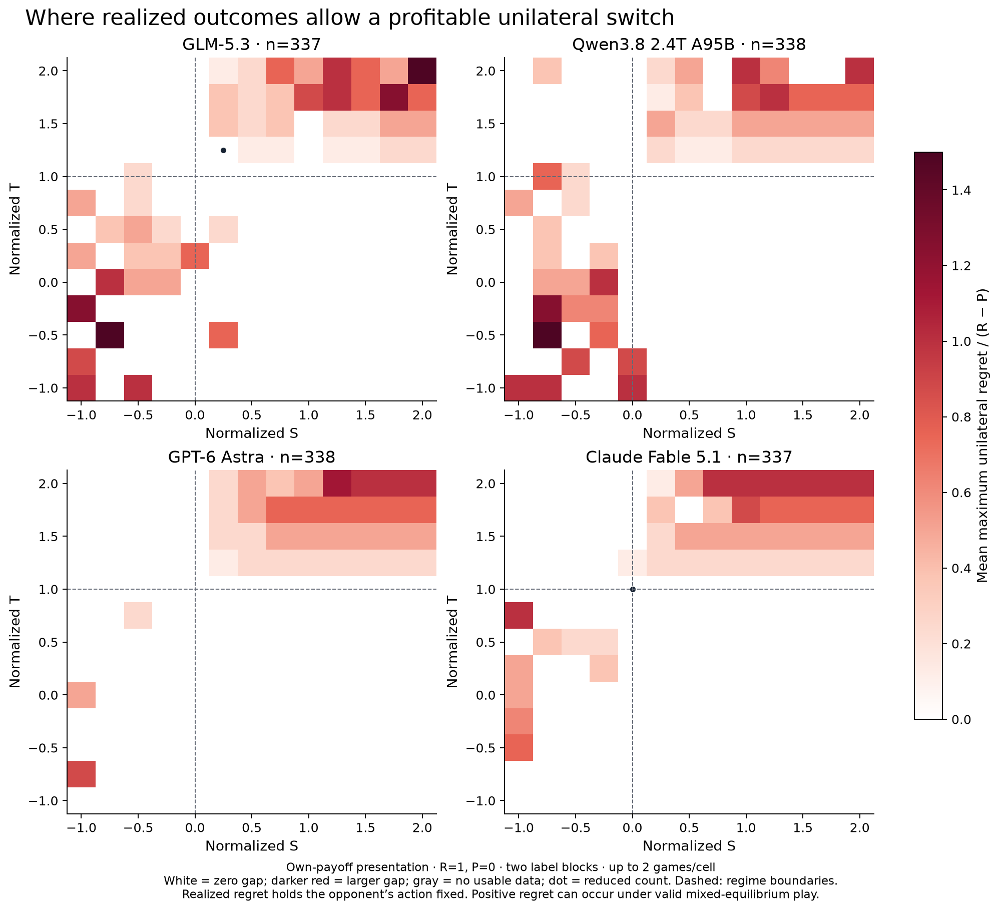
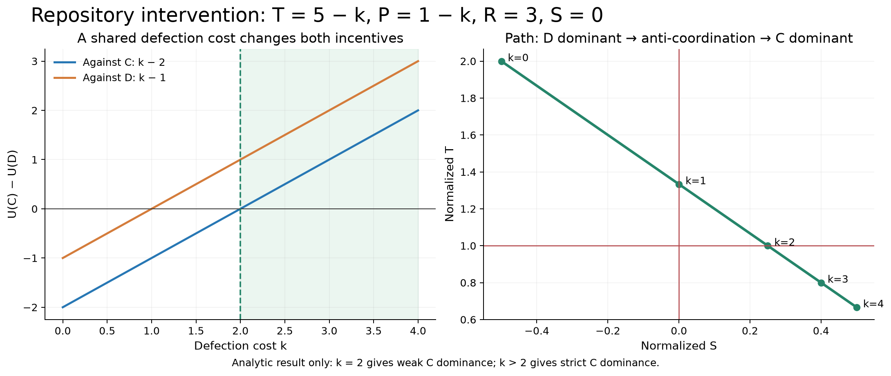
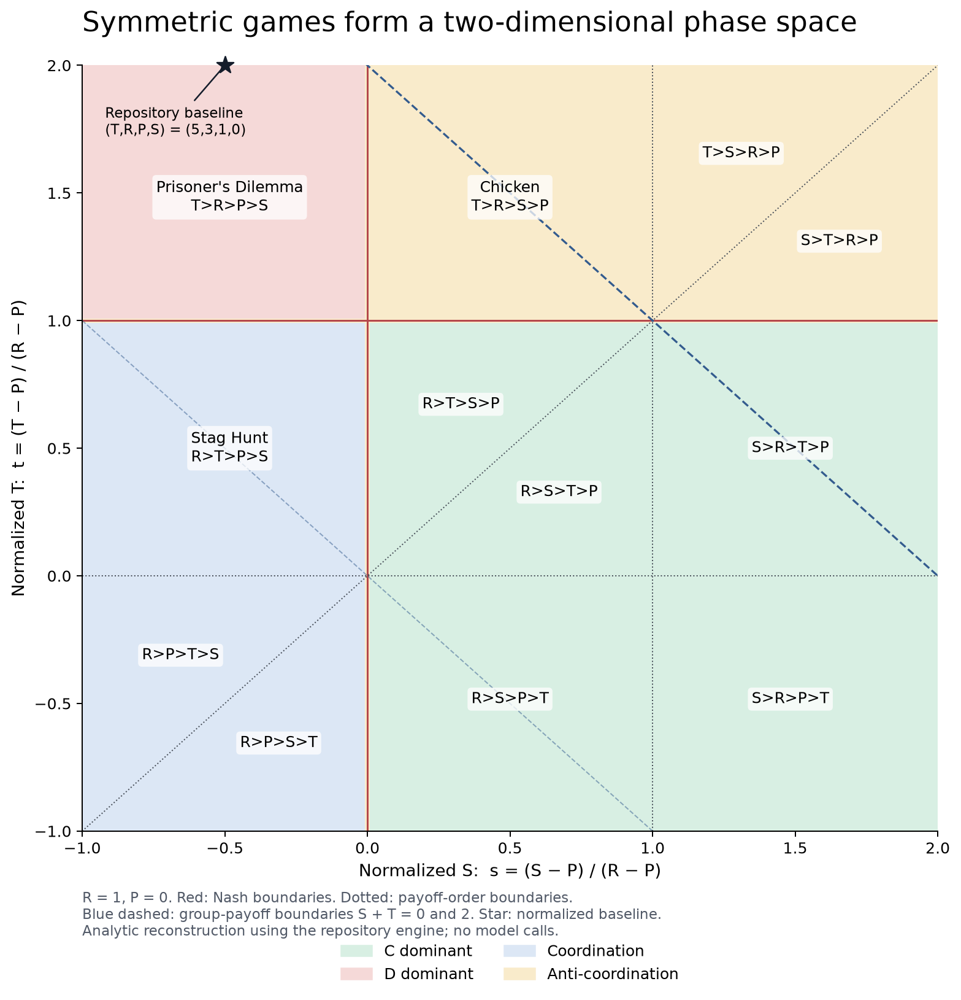
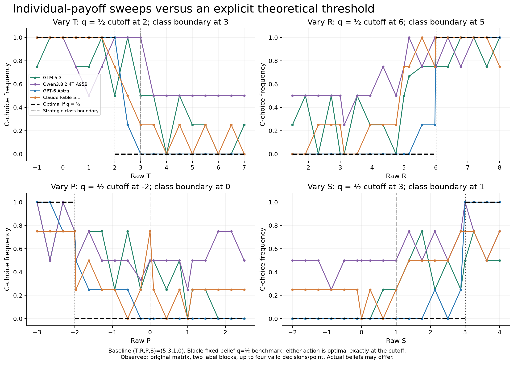

Figures for the post
Use figures 1 and 2 for the central empirical argument; figure 3 distinguishes belief consistency from equilibrium stability. Keep figure 4 close to the results because presentation effects are large. Figures 5 and 6 explain the utility theory; figure 7 is optional. “Susceptibility” is operationalized here as response to payoff incentives. These are descriptive data with few repeats per cell, not universal model rankings.
Copy-ready captions and methodological limits
Main figure 1: response to payoff incentives
Cooperation frequency across normalized payoffs
Each panel shows one model in isolated, simultaneous self-play. We normalize payoffs to R=1 and P=0, varying S horizontally and T vertically on a 13×13 grid with spacing 0.25. Color is the fraction of individual C choices, averaged within valid joint games: yellow means all observed choices were C and purple means all were D. C and D are analytical labels; prompts used neutral A/B labels, reversed across two blocks. Each cell contains at most two valid games (four decisions). Dashed/red regime boundaries at S=0 and T=1 separate dominance, coordination, and anti-coordination regions. The clearer own-payoff presentation was an exploratory follow-up. Here “susceptibility” means observed response to payoff incentives, not a safety or manipulation score. Most cells are not strict Prisoner’s Dilemma; strict PD occupies S<0, T>1.
PNG · SVG

Main figure 2: deviation in utility units
Expected utility lost relative to the stated-belief best response
At each normalized S–T point, color measures mean expected payoff loss from the chosen action relative to the best response to that decision’s reported opponent-cooperation probability q. The cooperation advantage is Δ(q)=q(R−T)+(1−q)(S−P); loss is max(0,−Δ) after choosing C or max(0,Δ) after choosing D, divided by R−P. White indicates zero loss and deeper red larger loss, on a common scale across models. The own-payoff grid provides at most four usable decisions per cell. Either action is accepted at indifference; a dot marks a reduced count. This is a test of action–belief consistency. Reported beliefs may be inaccurate or post-hoc rationalizations. It is not a displacement of an empirical switching threshold in S–T units.
PNG · SVG

Main figure 3 / companion: belief-free comparison
Profitable unilateral deviations in realized joint outcomes
For each recorded own-payoff game, we hold the opponent’s action fixed and calculate each player’s gain from switching. The larger gain is divided by R−P, then averaged within each S–T cell. White means zero profitable unilateral deviation in the observed games; darker red indicates larger available gains. At most two valid games contribute per cell. This measure uses actual choices rather than stated beliefs. A positive realized regret can occur when players validly sample a mixed Nash equilibrium; it is not by itself a reasoning-error rate. Comparing this map with figure 2 separates internal utility consistency from stability of realized self-play outcomes.
PNG · SVG

Essential control
Matrix presentation substantially changes apparent cooperation
The targeted exploratory control compares the same strict-PD payoff cells and first two label blocks under row/column wording and explicit “your payoff / opponent payoff” wording. Each bar contains 32 valid decisions per model and role. Qwen’s column-role C frequency changes from 31/32 to 1/32, while its row-role frequency changes from 0/32 to 2/32. The game utilities and individual-payoff objective are identical, but both payoff perspective and display order change. These observations demonstrate presentation sensitivity without isolating its cause. This control motivated the clearer-presentation grid used in figures 1–3.
PNG · SVG

Theory / intervention figure
A joint defection cost crosses two separate incentives
Analytic intervention around (T,R,P,S)=(5,3,1,0): deduct k from both defection payoffs, giving T=5−k and P=1−k. The C advantage is k−2 against C and k−1 against D. Thus k=2 makes C weakly dominant and k>2 makes it strictly dominant. Under normalization the path is s=(k−1)/(k+2), t=4/(k+2). Changing one raw payoff alone leaves one baseline defection incentive intact. This figure is an algebraic result, not a separately sampled model experiment; k is a utility cost, not API dollars.
PNG · SVG

Opening explainer / appendix
The theoretical phase space of symmetric two-action games
Positive affine normalization maps payoffs to s=(S−P)/(R−P) and t=(T−P)/(R−P), for R>P. This leaves two degrees of freedom and preserves expected-utility incentives. The map shows twelve strict payoff orderings, regime boundaries, and group-payoff boundaries. The repository’s (5,3,1,0) baseline is at (s,t)=(−0.5,2). It is an analytic reconstruction following Falmagne’s SIAM article; no model calls are involved.
PNG · SVG

Optional appendix: one-payoff sweeps
Observed one-payoff sweeps against a fixed-belief benchmark
Each panel changes only T, R, P, or S around (5,3,1,0). Colored curves show observed C frequencies from up to four valid decisions per value under the original matrix presentation. Black dashed segments are the expected-utility best response assuming q=1/2: the indifference points are T=2, R=6, P=−2, S=3, with either action optimal at equality. Gray boundaries mark changes in strategic class. The fixed-q step is one conditional benchmark, not the complete equilibrium prediction. The original presentation is known to be sensitive to player role. No binary search or empirical threshold-location fit was performed.
PNG · SVG
